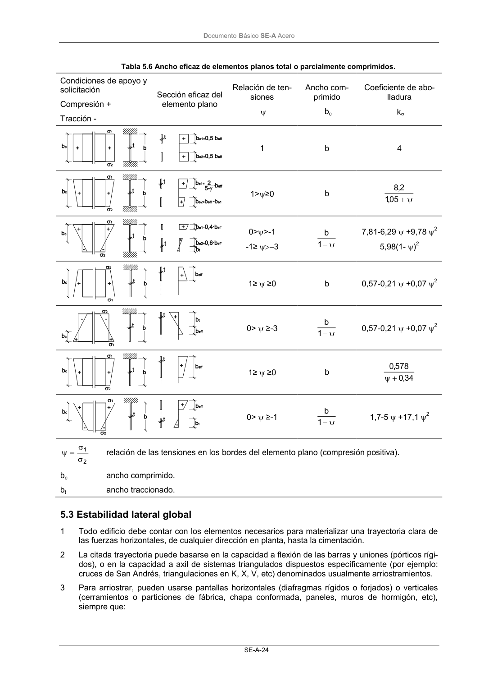

DB-SE-A Acero · edición 2007-10-23 · capa oficial
Documento DB-SE-A-oficial · SHA-256 del PDF 9ed9ea694aabfbda3bfbbef40dfe9223fde05d13c35bc2ba9751e5a96a22a64f
Página física 26 de 168.
Copia fiel del PDF fuente · Fuente oficial
Ficha de la disposición en la fuente oficial
Formato: Texto de la página (Markdown)
Documento Básico SE-A Acero SE-A-24 Tabla 5.6 Ancho eficaz de elementos planos total o parcialmente comprimidos. Condiciones de apoyo y solicitación Compresión + Tracción - Sección eficaz del elemento plano Relación de ten- siones ψ Ancho com- primido bc Coeficiente de abo- lladura kσ 1 b 4 1>ψ≥0 b ψ + 05 ,1 2,8 0>ψ>-1 -1≥ ψ>−3 ψ − 1 b 7,81-6,29 ψ +9,78 ψ2 5,98(1- ψ)2 1≥ ψ ≥0 b 0,57-0,21 ψ +0,07 ψ2 0> ψ ≥-3 ψ − 1 b 0,57-0,21 ψ +0,07 ψ2 1≥ ψ ≥0 b 34 ,0 578 ,0 + ψ 0> ψ ≥-1 ψ − 1 b 1,7-5 ψ +17,1 ψ2 2 1 σ σ = ψ relación de las tensiones en los bordes del elemento plano (compresión positiva). bc ancho comprimido. bt ancho traccionado. 5.3 Estabilidad lateral global 1 Todo edificio debe contar con los elementos necesarios para materializar una trayectoria clara de las fuerzas horizontales, de cualquier dirección en planta, hasta la cimentación. 2 La citada trayectoria puede basarse en la capacidad a flexión de las barras y uniones (pórticos rígi- dos), o en la capacidad a axil de sistemas triangulados dispuestos específicamente (por ejemplo: cruces de San Andrés, triangulaciones en K, X, V, etc) denominados usualmente arriostramientos. 3 Para arriostrar, pueden usarse pantallas horizontales (diafragmas rígidos o forjados) o verticales (cerramientos o particiones de fábrica, chapa conformada, paneles, muros de hormigón, etc), siempre que:
